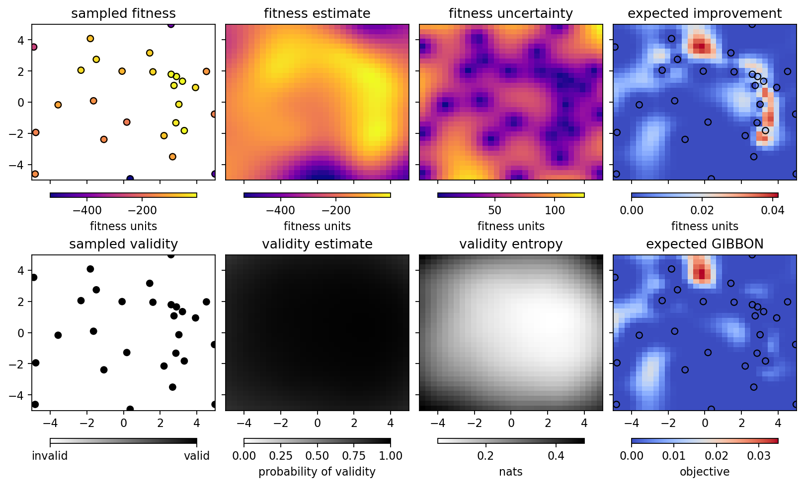

Running the optimizer with Himmelblau’s function¶
[1]:
%run -i ../../../examples/prepare_bluesky.py
import bloptools
from bloptools.experiments.tests import Himmelblau
himmelblau = Himmelblau()
[2]:
boa = bloptools.bo.BayesianOptimizationAgent(
dofs=himmelblau.dofs,
dets=[],
bounds=himmelblau.bounds,
db=db,
experiment=himmelblau,
)
RE(boa.initialize(init_scheme='quasi-random', n_init=8))
learning with strategy "quasi-random" ...
Transient Scan ID: 1 Time: 2023-04-18 14:35:24
Persistent Unique Scan ID: '18bb9b10-acbe-4aba-997a-9a00f73f4a70'
New stream: 'primary'
+-----------+------------+------------+------------+
| seq_num | time | x1 | x2 |
+-----------+------------+------------+------------+
| 1 | 14:35:24.7 | 2.291 | -1.363 |
| 2 | 14:35:24.7 | 3.541 | -3.585 |
| 3 | 14:35:24.7 | -2.709 | -4.696 |
| 4 | 14:35:24.7 | -3.959 | -0.252 |
| 5 | 14:35:24.7 | -1.459 | 1.970 |
| 6 | 14:35:24.7 | -0.209 | 0.859 |
| 7 | 14:35:24.7 | 1.041 | 3.082 |
| 8 | 14:35:24.7 | 4.791 | 4.193 |
+-----------+------------+------------+------------+
generator list_scan ['18bb9b10'] (scan num: 1)
x1 x2 fitness
0 2.290852 -1.362940 -58.753649
1 3.540852 -3.585162 -92.444066
2 -2.709148 -4.696273 -222.255445
3 -3.959148 -0.251828 -138.280117
4 -1.459148 1.970394 -68.562948
5 -0.209148 0.859283 -143.819905
6 1.040852 3.081505 -59.225908
7 4.790852 4.192616 -496.859505
[2]:
('18bb9b10-acbe-4aba-997a-9a00f73f4a70',)
We initialized the GP with the “quasi-random” strategy, as it doesn’t require any prior data. We can view the state of the optimizer:
[3]:
boa.plot_state(gridded=True)

Let’s learn a bit more, using the “GIBBON” framework to investigate points that are likely to tell us about the optimum. Running two iterations with four points per iteration:
[4]:
RE(boa.learn(strategy='eGIBBON', n_iter=2, n_per_iter=4))
boa.plot_state(gridded=True)
learning with strategy "eGIBBON" ...
Transient Scan ID: 2 Time: 2023-04-18 14:35:31
Persistent Unique Scan ID: 'a8a38547-93eb-4279-9916-bdbe8b55f219'
New stream: 'primary'
+-----------+------------+------------+------------+
| seq_num | time | x1 | x2 |
+-----------+------------+------------+------------+
| 1 | 14:35:31.8 | -4.899 | 4.670 |
| 2 | 14:35:31.8 | -4.974 | 4.822 |
| 3 | 14:35:31.8 | -4.774 | 4.826 |
| 4 | 14:35:31.8 | -4.921 | 4.851 |
+-----------+------------+------------+------------+
generator list_scan ['a8a38547'] (scan num: 2)
x1 x2 fitness
8 -4.898515 4.670137 -410.314176
9 -4.974297 4.822029 -471.869581
10 -4.774265 4.825700 -408.753085
11 -4.920585 4.851008 -461.109376
Transient Scan ID: 3 Time: 2023-04-18 14:35:35
Persistent Unique Scan ID: '3d20df9e-c3e8-42a9-b777-427c9f24db35'
New stream: 'primary'
+-----------+------------+------------+------------+
| seq_num | time | x1 | x2 |
+-----------+------------+------------+------------+
| 1 | 14:35:35.3 | 4.616 | -4.916 |
| 2 | 14:35:35.3 | 4.960 | -4.883 |
| 3 | 14:35:35.4 | 4.876 | -4.726 |
| 4 | 14:35:35.4 | 4.921 | -4.669 |
+-----------+------------+------------+------------+
generator list_scan ['3d20df9e'] (scan num: 3)
x1 x2 fitness
12 4.616144 -4.915526 -503.392160
13 4.959523 -4.883235 -551.407322
14 4.875875 -4.725897 -473.217479
15 4.921311 -4.668618 -461.886392

Now let’s try the “EI” strategy to sample where we expect the largest improvement in the fitness:
[5]:
RE(boa.learn(strategy='eI', n_iter=4, n_per_iter=4))
boa.plot_state(gridded=True)
learning with strategy "eI" ...
Transient Scan ID: 4 Time: 2023-04-18 14:35:42
Persistent Unique Scan ID: 'a94c0794-9ebb-4f2b-8a4c-ead94a9897cf'
New stream: 'primary'
+-----------+------------+------------+------------+
| seq_num | time | x1 | x2 |
+-----------+------------+------------+------------+
| 1 | 14:35:42.2 | 1.782 | -2.014 |
| 2 | 14:35:42.2 | 1.716 | -1.891 |
| 3 | 14:35:42.2 | 1.793 | -1.830 |
| 4 | 14:35:42.2 | 2.006 | -1.428 |
+-----------+------------+------------+------------+
generator list_scan ['a94c0794'] (scan num: 4)
x1 x2 fitness
16 1.782035 -2.013795 -98.140728
17 1.716259 -1.890652 -101.826426
18 1.793120 -1.830058 -95.895265
19 2.006282 -1.428474 -79.336800
Transient Scan ID: 5 Time: 2023-04-18 14:35:45
Persistent Unique Scan ID: 'd58b33f5-92a3-4336-9192-6b4b39aaf261'
New stream: 'primary'
+-----------+------------+------------+------------+
| seq_num | time | x1 | x2 |
+-----------+------------+------------+------------+
| 1 | 14:35:45.4 | -4.842 | -4.517 |
| 2 | 14:35:45.4 | -4.894 | -4.767 |
| 3 | 14:35:45.4 | -4.892 | -4.945 |
| 4 | 14:35:45.4 | -4.999 | -4.953 |
+-----------+------------+------------+------------+
generator list_scan ['d58b33f5'] (scan num: 5)
x1 x2 fitness
20 -4.842095 -4.517329 -136.206892
21 -4.893996 -4.767398 -184.352070
22 -4.892437 -4.944729 -221.560522
23 -4.998660 -4.952801 -238.649968
Transient Scan ID: 6 Time: 2023-04-18 14:35:48
Persistent Unique Scan ID: 'cab831e2-7c6b-4877-a6c8-414100993d9e'
New stream: 'primary'
+-----------+------------+------------+------------+
| seq_num | time | x1 | x2 |
+-----------+------------+------------+------------+
| 1 | 14:35:48.5 | 0.246 | 4.822 |
| 2 | 14:35:48.5 | 0.271 | 4.886 |
| 3 | 14:35:48.5 | 0.446 | 4.966 |
| 4 | 14:35:48.5 | 0.547 | 4.876 |
+-----------+------------+------------+------------+
generator list_scan ['cab831e2'] (scan num: 6)
x1 x2 fitness
24 0.245823 4.821642 -309.482858
25 0.270651 4.886472 -330.547703
26 0.446300 4.965599 -361.785562
27 0.547003 4.876482 -334.150377
Transient Scan ID: 7 Time: 2023-04-18 14:35:51
Persistent Unique Scan ID: '94570611-fe03-46fe-b821-9d364431d610'
New stream: 'primary'
+-----------+------------+------------+------------+
| seq_num | time | x1 | x2 |
+-----------+------------+------------+------------+
| 1 | 14:35:51.7 | 0.092 | 1.324 |
| 2 | 14:35:51.7 | 3.389 | -0.880 |
| 3 | 14:35:51.7 | -0.475 | -1.463 |
| 4 | 14:35:51.7 | -4.428 | -0.119 |
+-----------+------------+------------+------------+
generator list_scan ['94570611'] (scan num: 7)
x1 x2 fitness
28 0.091915 1.323641 -120.053449
29 3.388590 -0.880171 -8.205027
30 -0.475140 -1.462540 -178.212973
31 -4.427573 -0.119442 -202.241172
